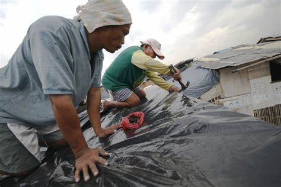

Due to its geographical location, the Philippines is very prone to tropical cyclones. Which frequently result in intense rainfall, widespread floods, and also powerful guests, all of which cause significant losses in human life as well as damage to crops and property. Your top objectives should be obtaining enough food and water to last your entire home for at least three days before a typhoon strikes. Make sure your pets have enough food and water if you have any.
Stay put, Everyone should be in the designated spot at the height of the typhoon with all the necessary emergency gear, supplies, and luggage in case you need to leave. Don't glance outside, even how tempting it might be. When traveling quickly, windows are readily broken. During Odette, a friend of mine nearly had an accident when the wind tore her air conditioning unit from the wall. The safest course of action during a typhoon is to remain indoors and stationary. Check to make sure everyone is present and to get the latest weather and road reports, turn the radio to an AM channel.
Last but not least, make an effort to relax. To assist reduce your worry during the worst of the typhoon, prepare goods like pillows, blankets, and something to help quiet and ground you (such as plush animals or essential oils). To pass the time (and avoid using your phone constantly), you can even arrange card games and board games.
Typhoons extract the heat energy from the surface of the warm parts of the ocean and release extra energy into the upper atmosphere, which transports it to higher latitudes by radiating it into space. The warmer the area of the ocean is, the stronger the typhoon. Cold water limits the strength of the typhoon by reducing its energy supply. This similarly reduces the power of potential follow-up typhoons in its path. Landforms can also weaken typhoons. When it moves over mountains, the effect of topography further reduces the strength of the air. While still in the water areas, the typhoon is strongest, but its strong winds will normally diminish when it is over land. Large land masses can cause the typhoon to disperse. This is because the heat sources are lower and there is less moisture on land. We can conclude that tropical cyclones are closely related to landforms and the ocean. Typhoon Haiyan/ Yolanda started as an area of convection located in the equatorial Pacific Ocean. It traveled towards the west across the tropical Pacific Ocean growing in strength and size over the next few days. On November 8, it made landfall in the Philippines. The typhoon left the PAR after more than 24 hours
Examine all of the supplies you prepared in advance once the typhoon's worst has gone and the wind and rain have subsided. Verify that the water is clean and that the food is all still good. If your region was seriously impacted, you might need to restrict these items. Keep the radio on and listen for any updates regarding the local weather. Assessing any damage to your home's inside should come next. Put on your protective clothing, with boots and gloves being the most crucial, and carefully inspect the entire house for any damage. If the weather permits, you should begin cleaning your home's interior and exterior. There will be a ton of debris that needs to be removed.